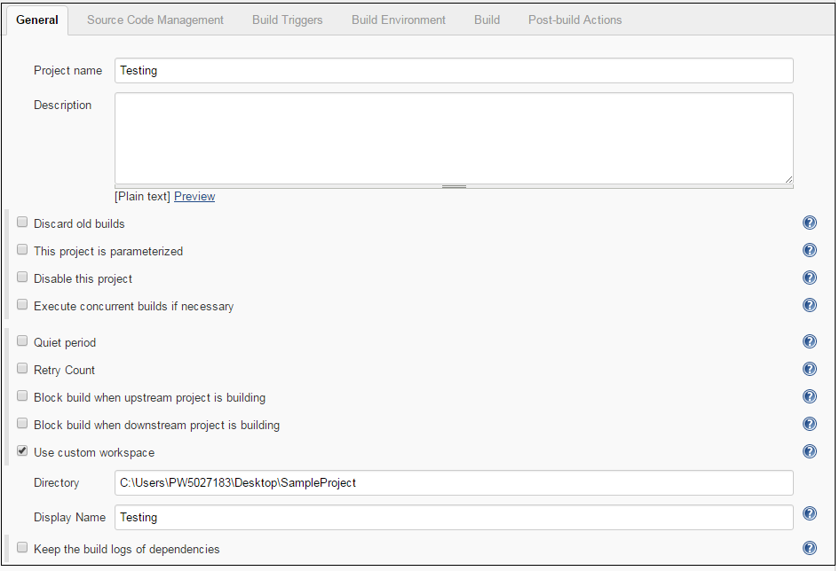
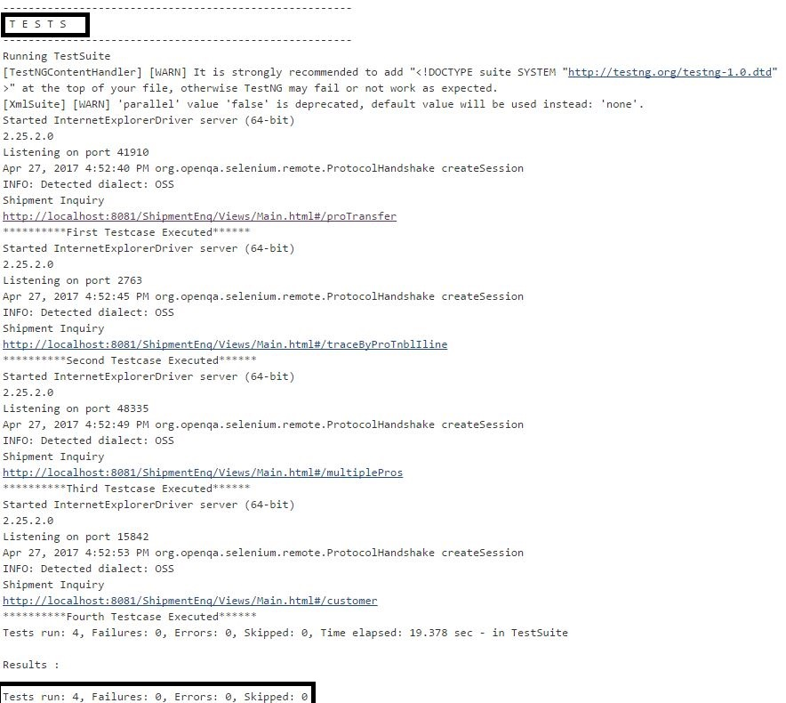

Jenkins
Setup of Test job in Jenkins
- Click on New Item to create new job.
- Enter an item name as Test.
- Select Freestyle project and click on Ok.
- A test job will be displayed on dashboard.
- Click on test job.
- Click on Configure Link.

- Checkout the Test codes from local repository.
- We will build the project to take new changes using ANT.
- We will use batch file which will invoke the testing suite (TestNG) to run the selenium test script.
- Reports will be generated by testing framework in local workspace.
Run Test cases via automated test framework
Jenkins will trigger the test cases via test automation tool
Test cases will be invoked by test suite with Selenium, depending on deployed environment. Once test job is triggered in Jenkins, this will invoke TestNG framework from POM goal execution. Then TestNG will run the automated selenium test cases.
Below screenshot shows how TestNG suite is executing selenium test cases one after another. It will show the overall test results.

After successful execution of all the test cases, Jenkins will generate overall test report in workspace, under test suite folder.
|